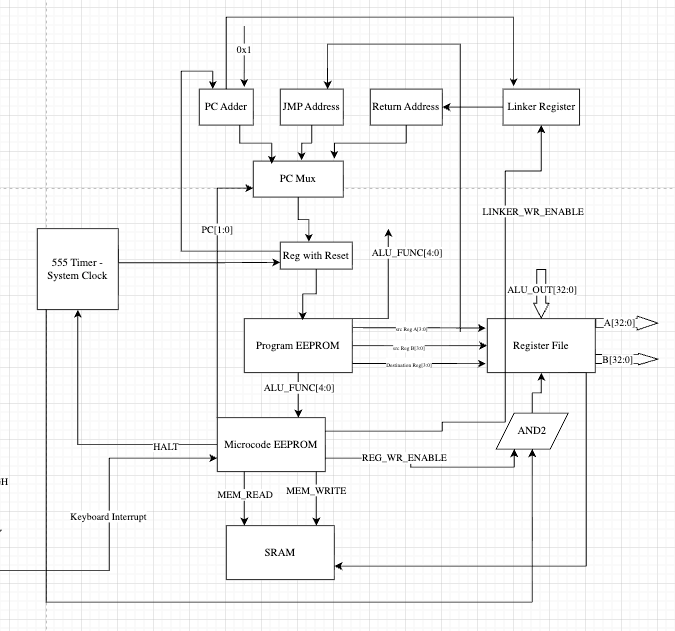
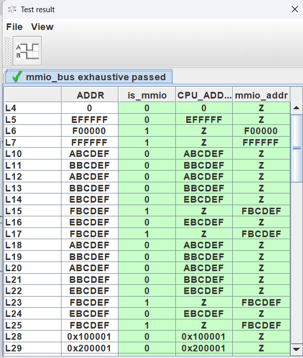

Dispatch
Every opcode indexes a 48-bit microcode word.
The sequencer is a 74163 on the falling edge. Data registers clock on the rising edge. Two-phase for most ops. Three-phase when memory has to wait.
Every opcode indexes a 48-bit word in the microcode ROM. The fields are not a mystery: alu-op, operand prep, carry select, shift, immediate overlay, writeback source, register and flag write enables, memory read/write, byte-lane mode, branch, stack, and the cycle count that tells the sequencer when to reset.

Fig. — Datapath & controlBoxes before footprints · memory is plumbing
Writeback is a seven-way mux in the encoding: ALU, shift, PC+1, memory, I/O, register A, IR immediate, multiply. Memory ops buy a third phase. Everything else is fetch and execute.
| cycles | Phases | Counter |
|---|---|---|
| 1 | FETCH + EXECUTE | Q=00, Q=01 |
| 2 | FETCH + EXECUTE + MEM_WAIT | Q=00, Q=01, Q=10 |
Address bus source is another small field: IR address, ALU out, register B, PC, or SP. The load/store path is plumbing. The ALU remains the combinational monster. This sheet is how the rest of the machine talks to memory without inventing a second computer.

Fig. — MMIO bus, passingArbiter green · memory is plumbing